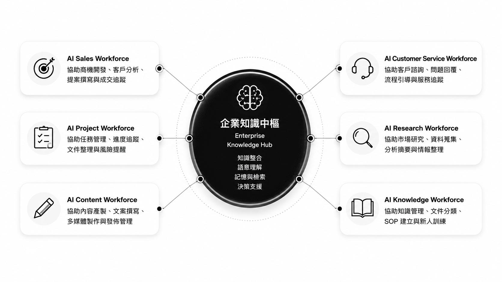

AI Workforce 是由 AI 員工、企業知識中樞與自動化流程所組成的數位工作團隊。它協助企業執行重複性工作、保存知識資產，並提升整體組織生產力。

企業生產力，往往消失在看不見的工作縫隙中。
這些工作都很重要，
但不一定需要由最有經驗的人親自完成。
每一家企業的瓶頸不同。
DTCO 從問題出發，設計適合您組織的 AI 勞動力組合。
協助整理 SOP、FAQ、文件、技術知識與新人訓練內容。
協助處理常見問題、會員服務、流程引導與客服支援。
協助客戶需求分析、商機追蹤、提案產生與成交流程管理。
協助會議紀錄、任務追蹤、文件整理與專案風險提醒。
協助市場研究、文獻整理、法規分析與競品情報蒐集。
協助文章、社群貼文、電子報、SEO 內容與品牌知識產製。
這些不是 Demo，而是在真實場域中持續運作的 AI 工作流程。
從主題規劃、內容產製、文件整理、審稿追蹤到發布管理，AI 編輯部協助團隊穩定產出內容。
將 FAQ、SOP、專案文件與營運知識整合為企業知識中樞，讓任何人都能在 10 秒內找到答案。
協助團隊整理會議紀錄、追蹤任務、保存專案知識，讓每一個決策都有跡可循。
花 3 分鐘完成 AI 體檢，了解您的企業最適合從哪一種 AI Workforce 開始。
從第一位 AI 員工開始，逐步建立 AI 原生組織。
DTCO 長期投入軟體開發、政府專案、醫療生技數位轉型與 AI Agent 工作流程設計。
我們不只是導入 AI 工具，而是協助企業重新設計工作如何被完成。
AI 能力越強，
想像力越重要。
我們協助企業 AI 化、自動化所有能被 AI 化的工作流程，讓團隊生產力提升 10 倍，甚至 100 倍。